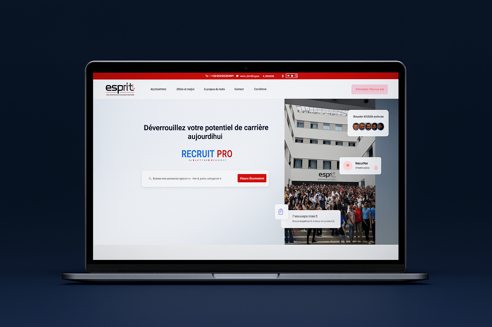
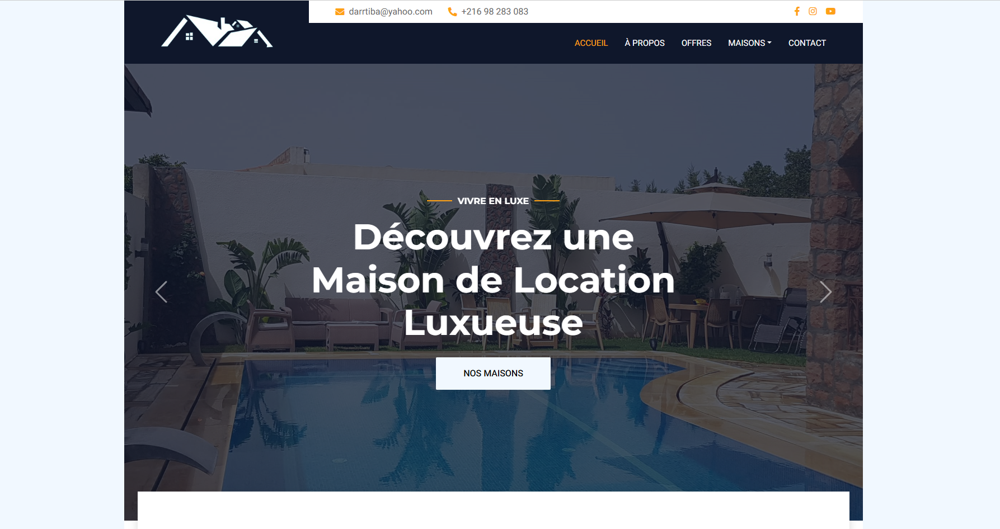
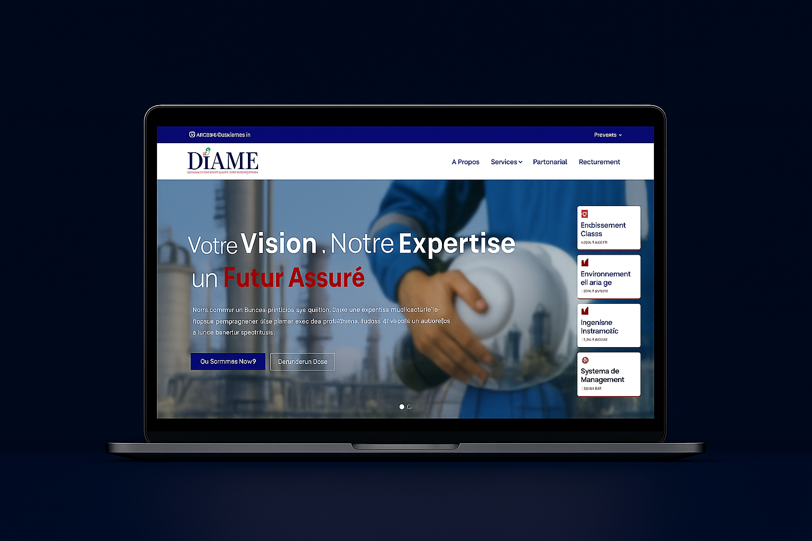
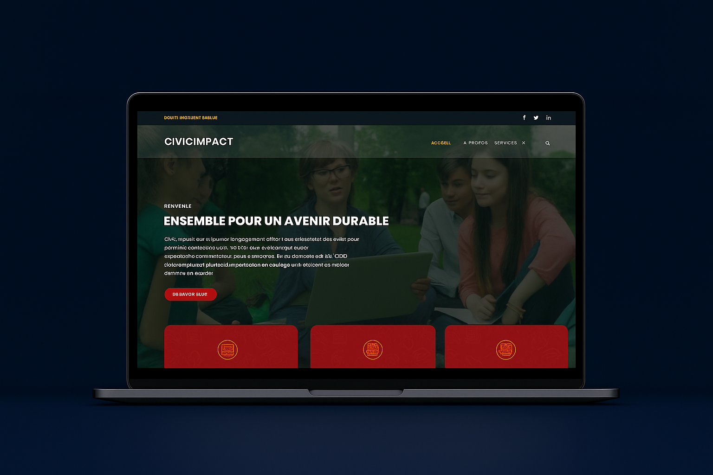
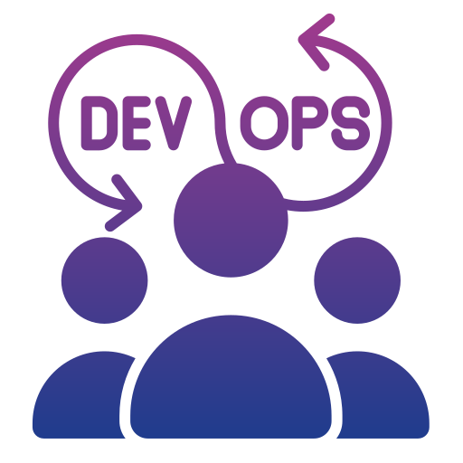
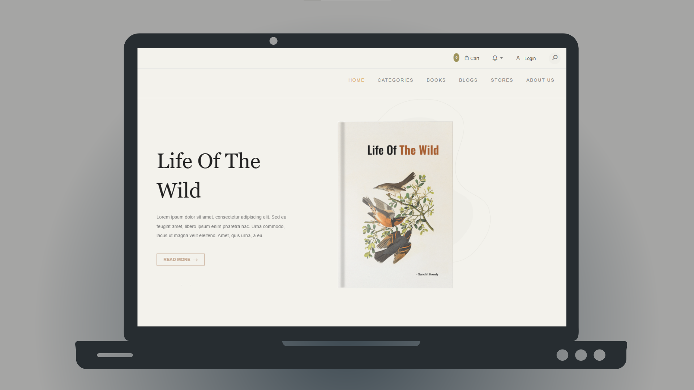
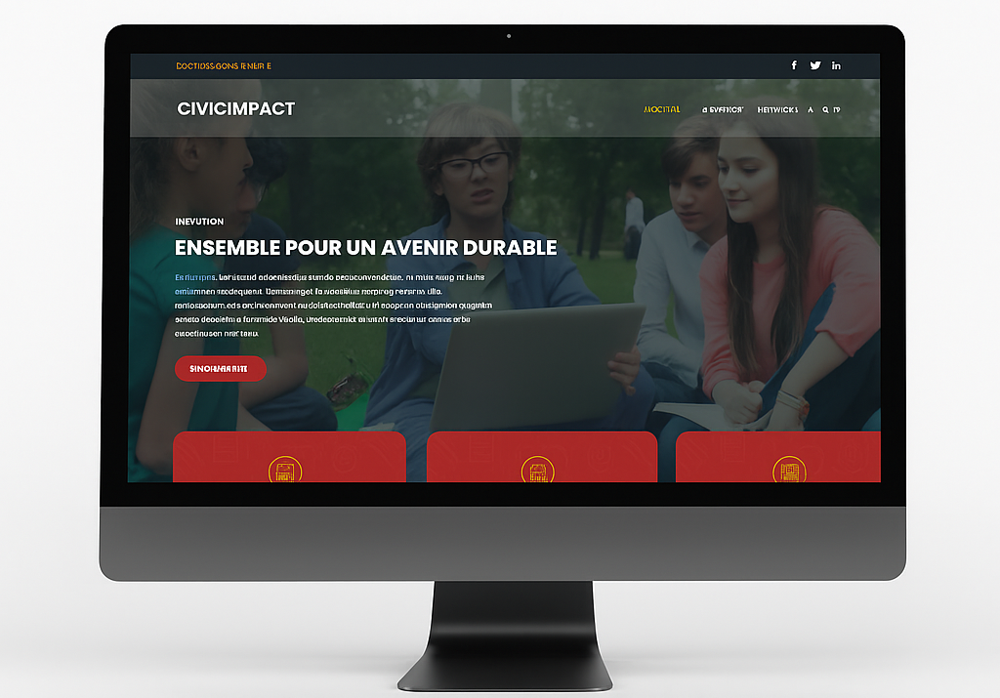
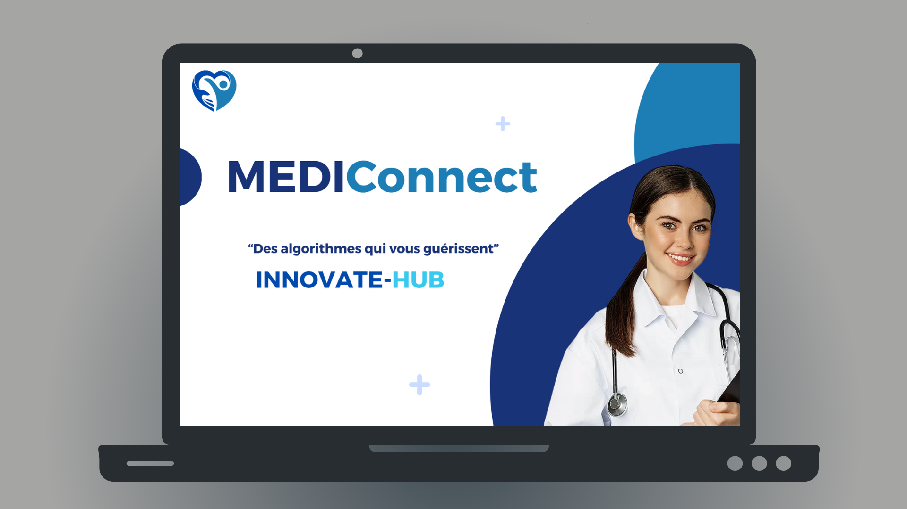
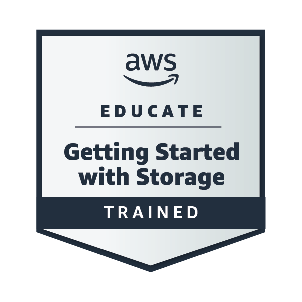
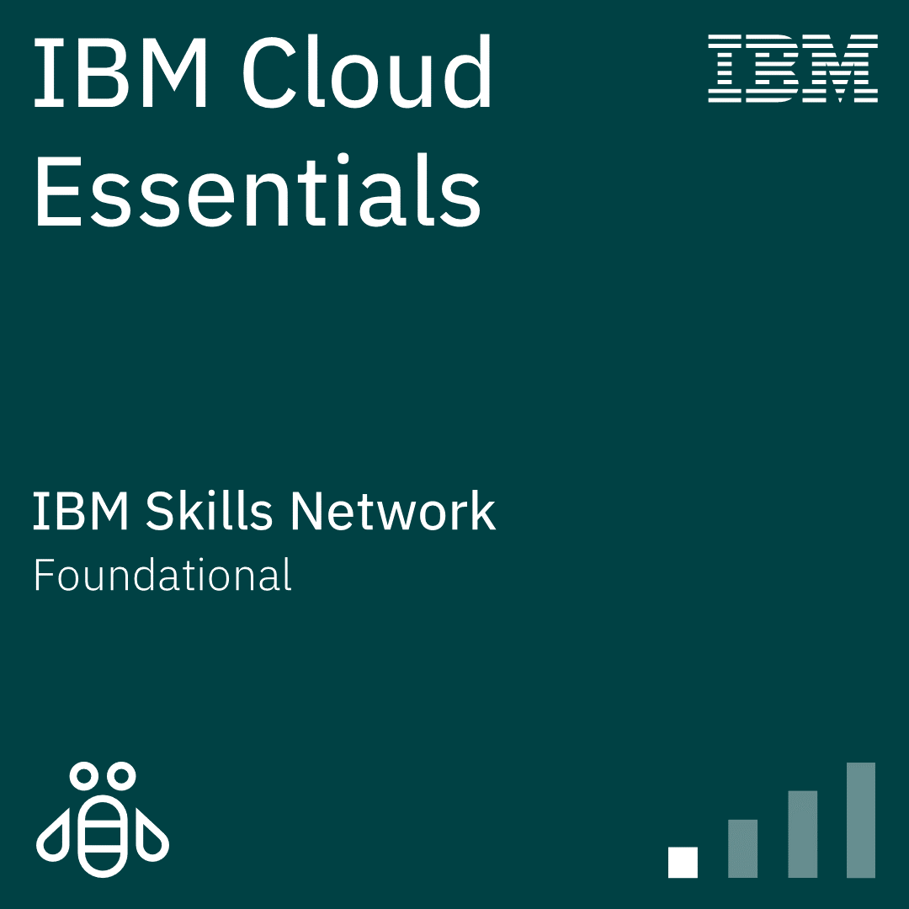

Engineering Resilient Distributed Systems & Automated Cloud Infrastructure.
Hi, I’m Seifeddine ABIDI. I build high-availability enterprise web solutions and automated delivery pipelines with Spring Boot, Angular, Camunda BPM, and Kubernetes GitOps. Currently operating production platforms including tunisiainvestment.tn (TIA) and SIGMAP.
curl -s https://api.seifeddine.dev/profile.json
Bridging Modern Full-Stack Development with Enterprise Cloud Operations
I design, build, and operate resilient software solutions end-to-end — from responsive, accessible Angular frontends to enterprise Spring Boot microservices, automated Camunda workflows, and GitOps-governed Kubernetes infrastructure.
Seifeddine ABIDI
Ingénieur Full-Stack & DevOps/Cloud
My software engineering philosophy revolves around performance, automated reliability, and clear system architecture. Rather than treating frontend, backend, and infrastructure as isolated silos, I bridge them seamlessly — ensuring that code written for the browser runs reliably through containerized pipelines onto high-availability cloud clusters.
Full-Stack Architecture
Building enterprise REST APIs with Spring Boot, FastAPI, and modular reactive user interfaces with Angular & React.
Cloud & GitOps Infrastructure
Declarative Kubernetes cluster deployments using ArgoCD, containerization with Docker, and provisioning via Ansible & Jenkins.
Workflow Automation (BPM)
Dynamic business process modeling using Camunda BPM, orchestrating complex approval paths with zero-code runtime adaptability.
Observability & Governance
Continuous code quality scanning with SonarQube, artifact management with Nexus/Verdaccio, and telemetry via Splunk & Prometheus.
System Architecture & Technology Stack
Structured by architectural layers to highlight real-world production engineering competencies across the software lifecycle.
Backend & Distributed Systems
Microservices, Enterprise APIs & Process Orchestration
Cloud, DevOps & Site Reliability
Containers, GitOps Pipelines & Observability
Frontend Architecture & Interfaces
Component-Driven SPAs, Reactive State & UI Systems
Databases & Software Engineering
Data Modeling, Transactions & Agile Engineering
Live Production Architecture Topology
End-to-end distributed request lifecycle across Seifeddine's production stack (TIA & SIGMAP)
Professional Experience & Engineering Journey
Proven track record delivering mission-critical applications across government institutions, enterprise fintech environments, and agile software consultancies.
Software Engineer — Full-Stack & DevOps/Cloud
Deploying, developing, and operating national mission-critical platforms in production: the Mauritanian e-procurement platform (SIGMAP) and the Tunisia Investment Authority (TIA - tunisiainvestment.tn).
Software Engineer Intern — Stage PFE
Engineered an end-to-end enterprise approval automation portal designed to replace rigid paperwork for budget requisitions, purchase authorizations, and executive sign-offs.
DevOps & Full-Stack Engineering Intern
Contributed to enterprise DevOps pipeline automation and multi-tiered application deployments in datacenter and virtualized cloud environments.
Software Engineer Intern — Stage PFE (Licence)
Architected and developed a full-scale CRM solution tailored for Labvet International medical laboratory operations.
Ingénierie en Informatique — Spécialité Cloud
Advanced Computer Science Engineering diploma focusing on Distributed Systems, Cloud Architecture, DevOps Automation, Microservices, and Enterprise Architecture.
Licence en Informatique — Génie Logiciel & Systèmes d'Information
Comprehensive foundation in Software Engineering, Algorithms, Object-Oriented Design (Java/C++), Relational Database Theory, and System Design.
Production Systems & Verified Engineering Projects
Every project listed below includes an actual, verified live production deployment or public repository link.
Tunisia Investment Authority (TIA)
Official national portal for investments in Tunisia, deployed on production. Built and managed with Kubernetes microservices, ArgoCD GitOps, Traefik Ingress with TLS, Keycloak IAM, Alfresco ECM document workflows, and n8n automation.

SIGMAP Governmental e-Procurement
National public procurement platform for the government of Mauritania. Architected Spring Boot REST APIs, dynamic Angular analytics dashboards, secure role-based access, and enterprise audit trails.

Dynamic Approval Workflow Engine
Enterprise approval management portal orchestrating multi-step organizational validations. Built on Camunda BPM, Spring Boot, and Angular, deployed on Kubernetes via ArgoCD GitOps pipelines.

Labvet International Medical CRM
Custom veterinary medical CRM tailored for Labvet International. Automated clinical test generation in PDF format with Dataduct data pipelines and FastAPI backend.

PetsStore Distributed Microservices
Resilient microservices architecture featuring Eureka Service Discovery, Spring Cloud API Gateway, Keycloak OAuth2/OIDC centralized identity, and Docker Compose orchestration.

Enterprise CI/CD & Observability Pipeline
Automated continuous delivery pipeline built with Jenkins, Maven builds, Mockito unit testing, SonarQube quality inspections, Nexus artifact archiving, and Prometheus/Grafana metric telemetry.
HubEducator – Multimodal AI Platform
Next-generation learning ecosystem equipped with multimodal AI coaching (text, voice, and visual inputs), dynamic exercises, student analytics, and granular role management in Django.

LibroLink – Collaborative Book Platform
Community library exchange web platform with gamification, wishlist tracking, social book reviews, and integrated secure payment processing for book loans.

Smart Emergency Hospital Triage
Emergency department hospital management solution powered by MERN stack, automated patient triage AI algorithms, and real-time patient queue updates via WebSockets.

MediConnect – Multi-Platform Suite
Comprehensive medical ecosystem spanning desktop (JavaFX), web (Symfony & MySQL), and mobile (Flutter & Firebase) for clinical records, inventory, and doctor schedules.
Certifications & Accreditations
Industry-recognized credentials in cloud infrastructure, object storage, and cloud computing fundamentals.

AWS Educate Getting Started with Storage
Amazon Web Services (AWS)
Show credential
IBM Cloud Essentials V3
Student Ambassador Program with IBM SkillsBuild
Show credentialLet’s Build Something Resilient Together
Interested in discussing a software engineering role, distributed systems architecture, or technical collaboration? Reach out directly.